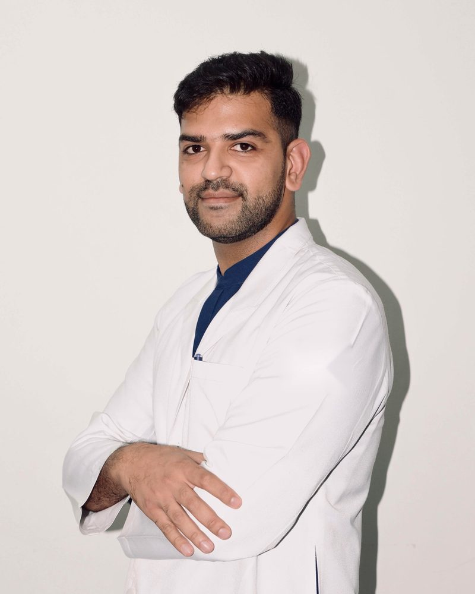

आज की सलाह लोड हो रही है…
गैस्ट्रोएंटेरोलॉजिस्ट · गुरुग्राम (गुड़गाँव)
आपके पेट, लिवर और पाचन से जुड़े सवालों के सीधे जवाब।
पेट और लिवर की कई बीमारियाँ समय पर पकड़ में आ जाएँ तो आसानी से ठीक हो जाती हैं, और कई तकलीफ़ें ठीक से जाँच के बाद मामूली निकलती हैं। यहाँ आम बीमारियों को आसान भाषा में समझाया गया है, ताकि आप जान सकें कि किन बातों पर ध्यान दें और विशेषज्ञ को कब दिखाएँ।
DrNB गैस्ट्रोएंटेरोलॉजी, मेदांता
ऑल-इंडिया गोल्ड मेडल
EUS और ERCP में एडवांस्ड फ़ेलोशिप

रोज़ की सेहत सलाह
हर दिन एक छोटी आदत, स्वस्थ पेट के लिए
हर सुबह खान-पान, पाचन और लिवर की सेहत पर एक नई सलाह, हमारी रोज़ की रसोई और दिनचर्या को ध्यान में रखकर। साथ में IBS वाले लोगों के लिए अलग से रोज़ की सलाह। जो काम की लगे, उसे परिवार के साथ ज़रूर शेयर करें।
आज आपकी थाली कितनी संतुलित है?
आज आपने जो खाया है उस पर टैप करें। तीन मीटर दिखाते हैं कि आपका फ़ाइबर, प्रोटीन और फ़ैट ज़्यादातर बड़ों की ज़रूरत के मुकाबले कितना है।
ये सामान्य गाइड हैं। आपकी रिपोर्ट, दूसरी बीमारियों और दवाइयों के हिसाब से आपकी डाइट में बदलाव की ज़रूरत हो सकती है।
भ्रम और सच
भ्रम या सच? अंदाज़ा लगाइए
पेट और लिवर से जुड़ी आम धारणाओं को स्वाइप करें और अंदाज़ा लगाइए कि कौन-सी सच है। हर सोमवार और गुरुवार नई जुड़ती हैं।
लोड हो रहा है…
लक्षण गाइड
मेरा शरीर मुझे क्या बता रहा है?
किसी लक्षण पर टैप करें और देखें कि आम तौर पर इसकी वजह क्या होती है और डॉक्टर को कितनी जल्दी दिखाना चाहिए। यह फ़ैसला लेने में मदद के लिए है, यह बीमारी की जाँच (डायग्नोसिस) नहीं है।
आम दिनों में दिखाएँ
कुछ दिनों के अंदर
आज ही
बीमारियों की जानकारी
अपने पाचन तंत्र को जानें
शरीर का कोई हिस्सा चुनें और देखें उसकी आम समस्याएँ, मरीज़ों के सवाल, और कौन-सी जाँचें मदद करती हैं।
शरीर के किसी हिस्से पर टैप करें
खाने की नली और पेट
खाने की नली खाना नीचे ले जाती है; पेट उसे एसिड के साथ मथता है।
आम समस्याएँ
एसिडिटी और रिफ़्लक्स (GERD)पेट का एसिड वापस खाने की नली में आना।→H. pylori, गैस्ट्राइटिस और अल्सरआम तौर पर एक आम इन्फ़ेक्शन या दर्द की गोलियाँ इसकी वजह होती हैं।→निगलने में तकलीफ़खाना नीचे जाते समय अटकना कभी सामान्य नहीं है।→पेट का कैंसरख़तरे के संकेत जिनमें एंडोस्कोपी ज़रूरी है।→अकेलेशियाखाने की नली की मांसपेशी ढीली नहीं होती।→खाने की नली का कैंसरबढ़ती निगलने की दिक्कत, वज़न घटने के साथ।→ख़ून की उल्टी, काला मलऊपरी पेट की ब्लीडिंग: इमरजेंसी।→हाइटस हर्नियापेट का हिस्सा छाती में खिसकना।→
सवाल और जाँचें
एसिडिटी कब किसी गंभीर बीमारी का संकेत होती है?क्या एंडोस्कोपी में दर्द होता है?क्या एसिडिटी की गोली (पैंटोप्राज़ोल) रोज़ लेना सुरक्षित है?मुझे इतनी डकारें क्यों आती हैं, और हिचकी कब चिंता की बात है?वज़न घटाने के इंजेक्शन (सेमाग्लूटाइड, टिर्ज़ेपाटाइड): पेट पर क्या असर करते हैं?
जाँच और प्रोसीजर
लिवर
खून साफ़ करता है, ऊर्जा जमा करता है और फ़ैट पचाने के लिए पित्त बनाता है।
आम समस्याएँ
फैटी लिवर (MASLD)बहुत आम, अक्सर बिना लक्षण के, और कई बार ठीक हो सकता है।→हेपेटाइटिस B और Cचुपचाप रहने वाले इन्फ़ेक्शन जिनका इलाज है, और C पूरी तरह ठीक हो सकता है।→पीलिया (जॉन्डिस)यह किसी दिक्कत का संकेत है, अपने आप में बीमारी नहीं।→सिरोसिसलिवर में लंबे समय की स्कारिंग।→अल्कोहलिक हेपेटाइटिसज़्यादा शराब से लिवर में अचानक सूजन।→ACLF (एक्यूट-ऑन-क्रॉनिक लिवर फ़ेल्योर)पुरानी लिवर बीमारी का अचानक बिगड़ना।→जलोदर (पेट में पानी)पेट में पानी भरना, अक्सर सिरोसिस से।→हेपेटिक एन्सेफ़ेलोपैथीलिवर की बीमारी में भ्रम और ज़्यादा नींद।→लिवर एब्सेसलिवर में मवाद, बुखार और दाईं ओर दर्द के साथ।→लिवर कैंसर (HCC)किसे हर छह महीने जाँच चाहिए, और क्यों।→टीबी की दवाओं से लिवर पर असरख़तरे के संकेत, और तुरंत क्या करें।→हेपेटाइटिस A और Eभारत में पीलिया की सबसे आम वजह।→गिल्बर्ट सिंड्रोमथोड़ा बढ़ा बिलीरुबिन जो नुकसान रहित है।→सप्लीमेंट से लिवर को नुकसानहर्बल, आयुर्वेदिक और जिम प्रोडक्ट।→विल्सन डिज़ीज़युवाओं में ख़ानदानी तांबे का जमाव।→
सवाल और जाँचें
क्या फैटी लिवर ठीक हो सकता है?लिवर टेस्ट में SGPT या SGOT बढ़ा हो: इसका क्या मतलब है?अल्ट्रासाउंड में ग्रेड 1, 2 या 3 फैटी लिवर: इसका क्या मतलब है?FibroScan क्या है, और इसके नतीजों का क्या मतलब है?पीलिया में क्या खाना चाहिए?लिवर ट्रांसप्लांट की ज़रूरत कब पड़ती है?मेरी अल्ट्रासाउंड रिपोर्ट के शब्दों का क्या मतलब है?लिवर के लिए कितनी शराब सुरक्षित है?
जाँच और प्रोसीजर
पित्ताशय और पित्त नली
पित्ताशय पित्त जमा करता है और खाने के बाद उसे आँत में छोड़ता है।
आम समस्याएँ
पित्त की पथरी और पित्त नली की पथरीपथरी जो पित्त के बहाव को रोक सकती है।→कोलेसिस्टाइटिसपित्ताशय की सूजन, अक्सर पथरी से।→कोलैंजाइटिसबंद पित्त की नली में इंफ़ेक्शन: इमरजेंसी।→पित्त की नली बंद होनाखुजली और हल्के मल के साथ पीलिया।→पित्ताशय के पॉलिपअक्सर नुकसान रहित; आकार से योजना तय होती है।→पित्ताशय का कैंसरउत्तर भारत में ज़्यादा; पथरी से जुड़ा।→पित्त की नली का कैंसरबिना दर्द का बढ़ता पीलिया।→कोलेडोकल सिस्टजन्म से फैली हुई पित्त की नली।→पित्ताशय निकालने के बाद दर्दबची पथरी, पित्त का रिसाव और दूसरी वजहें।→
जाँच और प्रोसीजर
पैंक्रियास
पाचन रस और खून की शुगर काबू में रखने वाला इंसुलिन बनाता है।
आम समस्याएँ
पैंक्रियाटाइटिसपैंक्रियास में सूजन, अचानक या लंबे समय की।→पैंक्रियास की सिस्ट और गाँठअक्सर किसी स्कैन में संयोग से पता चलती है।→पुरानी पैंक्रियाटाइटिसलंबा नुकसान: दर्द, चिकना मल, डायबिटीज़।→स्यूडोसिस्ट और वॉल्ड-ऑफ़ नेक्रोसिसपैंक्रियाटाइटिस के बाद जमा पानी, EUS से निकाला जाता है।→पैंक्रियास का कैंसरबिना दर्द का पीलिया, पीठ दर्द, वज़न घटना।→
सवाल और जाँचें
जाँच और प्रोसीजर
आँतें
खाना और पानी सोखती हैं, फिर मल बनाकर बाहर निकालती हैं।
आम समस्याएँ
इरिटेबल बाउल सिंड्रोम (IBS)लक्षण असली हैं, लेकिन आँत को कोई नुकसान नहीं।→अल्सरेटिव कोलाइटिस और क्रोहन बीमारीआँत में लंबे समय की सूजन।→कब्ज़अक्सर आसानी से ठीक, कभी-कभी ख़तरे का संकेत।→आँत के पॉलिप और आँत का कैंसरपॉलिप जल्दी पकड़ने से कई कैंसर रुक जाते हैं।→बवासीर, फ़िशर और फ़िस्टुलामल द्वार पर खून, दर्द या रिसाव।→सीलिएक बीमारीग्लूटेन से छोटी आँत को नुकसान।→लैक्टोज़ इनटॉलरेंसदूध के बाद गैस और दस्त।→पेट का इंफ़ेक्शनदस्त और उल्टी, अक्सर वायरस से।→पेट की टीबीवज़न घटना, बुखार और पेट दर्द; ठीक हो सकती है।→पेट में कीड़ेअसली संकेत, भ्रम और आसान इलाज।→लंबे समय के दस्तहफ़्तों से दस्त, या मल में आँव।→अपेंडिसाइटिस या गैस?निचले दाएँ पेट में दर्द: फ़र्क़ कैसे पहचानें।→टाइफ़ाइडबढ़ता बुखार; विडाल नहीं, ब्लड कल्चर।→यात्रा में दस्तसफ़र में बचाव और इलाज।→
सवाल और जाँचें
पेट में इतनी गैस और फूलापन क्यों होता है?क्या IBS ख़तरनाक है?क्या मल में खून हमेशा बवासीर होता है?पेट की समस्याओं में मल की कौन-सी जाँचें होती हैं, और इनसे क्या पता चलता है?कैप्सूल एंडोस्कोपी (गोली वाला कैमरा) क्या है?क्या प्रोबायोटिक मदद करते हैं, और क्या मुझे लेने चाहिए?
जाँच और प्रोसीजर
सभी विषय देखें
बीमारियाँ और समस्याएँ
- ACLF (एक्यूट-ऑन-क्रॉनिक लिवर फ़ेल्योर)
- H. pylori, गैस्ट्राइटिस और अल्सर
- अकेलेशिया
- अपेंडिसाइटिस या गैस?
- अल्कोहलिक हेपेटाइटिस
- अल्सरेटिव कोलाइटिस और क्रोहन बीमारी
- आँत के पॉलिप और आँत का कैंसर
- इरिटेबल बाउल सिंड्रोम (IBS)
- एसिडिटी और रिफ़्लक्स (GERD)
- कब्ज़
- कोलेडोकल सिस्ट
- कोलेसिस्टाइटिस
- कोलैंजाइटिस
- ख़ून की उल्टी, काला मल
- खाने की नली का कैंसर
- गिल्बर्ट सिंड्रोम
- जलोदर (पेट में पानी)
- टाइफ़ाइड
- टीबी की दवाओं से लिवर पर असर
- निगलने में तकलीफ़
- पित्त की नली का कैंसर
- पित्त की नली बंद होना
- पित्त की पथरी और पित्त नली की पथरी
- पित्ताशय का कैंसर
- पित्ताशय के पॉलिप
- पित्ताशय निकालने के बाद दर्द
- पीलिया (जॉन्डिस)
- पुरानी पैंक्रियाटाइटिस
- पेट का इंफ़ेक्शन
- पेट का कैंसर
- पेट की टीबी
- पेट में कीड़े
- पैंक्रियाटाइटिस
- पैंक्रियास का कैंसर
- पैंक्रियास की सिस्ट और गाँठ
- फैटी लिवर (MASLD)
- बवासीर, फ़िशर और फ़िस्टुला
- यात्रा में दस्त
- लंबे समय के दस्त
- लिवर एब्सेस
- लिवर कैंसर (HCC)
- लैक्टोज़ इनटॉलरेंस
- विल्सन डिज़ीज़
- सप्लीमेंट से लिवर को नुकसान
- सिरोसिस
- सीलिएक बीमारी
- स्यूडोसिस्ट और वॉल्ड-ऑफ़ नेक्रोसिस
- हाइटस हर्निया
- हेपेटाइटिस A और E
- हेपेटाइटिस B और C
- हेपेटिक एन्सेफ़ेलोपैथी
सवाल और जाँचें
- FibroScan क्या है, और इसके नतीजों का क्या मतलब है?
- अल्ट्रासाउंड में ग्रेड 1, 2 या 3 फैटी लिवर: इसका क्या मतलब है?
- एसिडिटी कब किसी गंभीर बीमारी का संकेत होती है?
- कैप्सूल एंडोस्कोपी (गोली वाला कैमरा) क्या है?
- क्या IBS ख़तरनाक है?
- क्या एंडोस्कोपी में दर्द होता है?
- क्या एसिडिटी की गोली (पैंटोप्राज़ोल) रोज़ लेना सुरक्षित है?
- क्या प्रोबायोटिक मदद करते हैं, और क्या मुझे लेने चाहिए?
- क्या फैटी लिवर ठीक हो सकता है?
- क्या मल में खून हमेशा बवासीर होता है?
- डायबिटीज़ पेट, लिवर और पैंक्रियास पर कैसे असर करती है?
- पीलिया में क्या खाना चाहिए?
- पेट की समस्याओं में मल की कौन-सी जाँचें होती हैं, और इनसे क्या पता चलता है?
- पेट में इतनी गैस और फूलापन क्यों होता है?
- मुझे इतनी डकारें क्यों आती हैं, और हिचकी कब चिंता की बात है?
- मेरी अल्ट्रासाउंड रिपोर्ट के शब्दों का क्या मतलब है?
- लिवर के लिए कितनी शराब सुरक्षित है?
- लिवर टेस्ट में SGPT या SGOT बढ़ा हो: इसका क्या मतलब है?
- लिवर ट्रांसप्लांट की ज़रूरत कब पड़ती है?
- वज़न घटाने के इंजेक्शन (सेमाग्लूटाइड, टिर्ज़ेपाटाइड): पेट पर क्या असर करते हैं?
जाँच और इलाज
एंडोस्कोपी में क्या होता है
ज़्यादातर प्रोसीजर में कैमरे वाली एक पतली, मुड़ने वाली नली इस्तेमाल होती है। कोई चीरा नहीं लगता, और ज़्यादातर लोग उसी दिन घर चले जाते हैं। कैसे होता है, यह देखने के लिए किसी पर भी टैप करें।
ख़ास गाइड
ज़िंदगी के ख़ास समय के लिए गाइड
दिवाली खान-पान गाइड
मिठाई, नमकीन, पार्टियाँ और देर रात का खाना: त्योहार का हफ़्ता बिना एसिडिटी, फ़ूड पॉयज़निंग या लिवर की परेशानी के कैसे मनाएँ।
गाइड पढ़ेंनवरात्रि व्रत गाइड
बिना एसिडिटी, कमज़ोरी या कब्ज़ के व्रत: खाने के आसान बदलाव, व्रत का दिन, कुट्टू आटे की सुरक्षा, और किन्हें पहले डॉक्टर से पूछना चाहिए।
गाइड पढ़ेंप्रेगनेंसी और पेट की सेहत
प्रेगनेंसी में जी मिचलाना, एसिडिटी, कब्ज़ और लिवर की दिक्कतें, घर के खाने की आसान डाइट, और कब तुरंत डॉक्टर को दिखाएँ।
गाइड पढ़ेंबच्चों के पेट की सेहत
दस्त, उल्टी, कब्ज़ और पेट दर्द: माता-पिता घर पर क्या करें, क्या खिलाएँ, और कब डॉक्टर को दिखाएँ।
गाइड पढ़ें60 के बाद पेट की सेहत
कब्ज़, एसिडिटी, दवाइयाँ, और वे लक्षण जिन्हें कभी उम्र का असर मानकर नहीं छोड़ना चाहिए, साथ में आसान डाइट प्लान।
गाइड पढ़ेंडॉ. क्षितिज लोचबकंसल्टेंट गैस्ट्रोएंटेरोलॉजिस्ट और थेराप्यूटिक एंडोस्कोपिस्ट
मैं खाने की नली, पेट, आँतों, लिवर, पित्ताशय और पैंक्रियास की बीमारियों का इलाज करता हूँ। मेरी विशेष ट्रेनिंग एडवांस्ड एंडोस्कोपी में है, जिससे कई ऐसी बीमारियाँ, जिनके लिए पहले ऑपरेशन करना पड़ता था, अब स्कोप से ठीक हो जाती हैं। मैं आपकी बीमारी और इलाज के विकल्प आराम से समझाता हूँ, ताकि हर फ़ैसला हम मिलकर लें।
इलाज के क्षेत्र
फैटी लिवर और हेपेटाइटिससिरोसिस और पेट से खून आनापित्त नली और पैंक्रियासएसिडिटी और अल्सरIBS और IBDआँत के पॉलिप और जाँचनिगलने में तकलीफ़प्रेगनेंसी में पेट और लिवर की देखभाल
- वर्तमान पदएसोसिएट कंसल्टेंट, गैस्ट्रोएंटेरोलॉजी और थेराप्यूटिक एंडोस्कोपी, अपोलो हॉस्पिटल्स, गोल्फ़ कोर्स रोड, गुरुग्राम
- ट्रेनिंगDrNB गैस्ट्रोएंटेरोलॉजी, मेदांता – द मेडिसिटी, गुरुग्राम (इंस्टिट्यूट ऑफ़ डाइजेस्टिव एंड हेपेटोबिलियरी साइंसेज़)
- सम्मानऑल-इंडिया गोल्ड मेडल, DrNB गैस्ट्रोएंटेरोलॉजी
- फ़ेलोशिपएंडोस्कोपिक अल्ट्रासाउंड (EUS) और ERCP में एडवांस्ड फ़ेलोशिप
- अनुभवपूर्व एसोसिएट कंसल्टेंट, मेदांता – द मेडिसिटी
- रजिस्ट्रेशनहरियाणा मेडिकल काउंसिल, रजि. नं. HN-23524
- रिसर्चवैरिसियल ब्लीडिंग, EUS से होने वाले प्रोसीजर और खाने की नली की जटिल सिकुड़न पर काम, वर्ल्ड कांग्रेस ऑफ़ गैस्ट्रोएंटेरोलॉजी 2026 में प्रस्तुत
आने से पहले
आम सवाल
क्या गैस्ट्रोएंटेरोलॉजिस्ट को दिखाने के लिए किसी डॉक्टर का रेफ़रल चाहिए?
नहीं। आप सीधे अपॉइंटमेंट ले सकते हैं। अगर किसी और डॉक्टर को दिखाया है, तो उनके पर्चे और नोट्स साथ लाएँ।
पहली बार आते समय क्या लाना चाहिए?
पुरानी सभी रिपोर्ट, स्कैन, एंडोस्कोपी और बायोप्सी की रिपोर्ट, और जो भी दवा या सप्लीमेंट आप लेते हैं उनकी लिस्ट। फ़ोन में रिपोर्ट की फ़ोटो भी चलेगी।
क्या खाली पेट आना है?
सिर्फ़ डॉक्टर को दिखाने के लिए नहीं। खाली पेट केवल एंडोस्कोपी जैसे प्रोसीजर और कुछ ब्लड टेस्ट के लिए आना होता है। यह आपको पहले से बता दिया जाएगा।
क्या वीडियो कंसल्टेशन होता है?
हाँ। फ़ॉलो-अप, रिपोर्ट दिखाने और डाइट की सलाह के लिए यह अच्छा रहता है। नए लक्षणों के लिए पहली बार आमने-सामने दिखाना बेहतर है, ताकि ठीक से जाँच हो सके।
क्या एंडोस्कोपी सुरक्षित है?
एंडोस्कोपी एक आम और बहुत सुरक्षित प्रोसीजर है। गंभीर दिक्कतें बहुत कम होती हैं। हर प्रोसीजर से पहले आपकी स्थिति के हिसाब से फ़ायदे और जोखिम समझाए जाते हैं, और आप कोई भी सवाल पूछ सकते हैं।
एंडोस्कोपी और दूसरे प्रोसीजर कहाँ होते हैं?
प्रोसीजर अस्पताल की पूरी सुविधाओं वाली एंडोस्कोपी यूनिट में होते हैं, जहाँ मॉनिटरिंग और बेहोशी (एनेस्थीसिया) की सुविधा रहती है। पूरी जानकारी कंसल्टेशन के समय दी जाती है।
क्लिनिक आएँ
अपॉइंटमेंट लें
पुरानी रिपोर्ट, स्कैन और अपनी दवाइयों की लिस्ट साथ लाएँ। अगर पहले एंडोस्कोपी हुई है, तो उसकी रिपोर्ट भी लाएँ।
अपॉइंटमेंट और वीडियो कंसल्टेशन
+91 96671 04882
कॉल या WhatsApp करें
आ नहीं सकते? फ़ॉलो-अप और रिपोर्ट दिखाने के लिए वीडियो कंसल्टेशन उपलब्ध है।
आर्क्योरा क्लिनिक (Arcura Clinic)
M2K कॉर्पोरेट पार्क एंड शॉपिंग प्लाज़ा
14, मेफ़ील्ड गार्डन, सेक्टर 51
गुरुग्राम, हरियाणा 122018
M2K कॉर्पोरेट पार्क एंड शॉपिंग प्लाज़ा
14, मेफ़ील्ड गार्डन, सेक्टर 51
गुरुग्राम, हरियाणा 122018
- सोम–शुक्र
- शाम 6 – 8 बजे
- रविवार
- सुबह 9 – दोपहर 1 बजे
- शनिवार
- बंद
हाल ही में आए थे? अपना अनुभव Google पर शेयर करें। इससे दूसरों को सही इलाज ढूँढने में मदद मिलती है।
अपोलो हॉस्पिटल्स, गोल्फ़ कोर्स रोड, गुरुग्राम में भी देखते हैं।